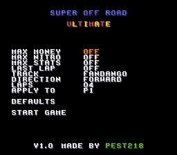

Super Off Road Ultimate
A boot-time cheat/config hack for Super Off Road (USA) on the SNES.
Adds a configuration screen that appears before the game's own title screen.
Features
Boot screen shows "SUPER OFF ROAD ULTIMATE" and a cursor-navigable menu:
| Row | Name | Effect |
|---|---|---|
| 0 | MAX MONEY | Money stays locked at 10,000,000, no matter how much you spend |
| 1 | MAX NITRO | Nitro stays maxed at 99, no matter how much you use |
| 2 | MAX STATS | Truck stats - Acceleration, Top Speed, Handling, Tires - are all locked at max (level 6) |
| 3 | LAST LAP | The race stays on its final lap for whatever LAPS is set (01–99), whatever race length you pick |
| 4 | TRACK | Selects one of the 16 tracks directly, instead of following the vanilla 64-race cycle |
| 5 | DIRECTION | Race the selected track FORWARD or REVERSE. Tracks with no reverse layout, like Boulder Hill, always play forward regardless of this setting |
| 6 | LAPS | Sets the race length to anywhere from 01 to 99 laps. D-pad Left/Right steps by 1 and wraps around at either end; the L and R shoulder buttons step by 10. Lap counts above 9 are readable because the hack adds a second lap digit to the race HUD - see Changes outside the menu |
| 7 | APPLY TO | Targets the cheats above at P1 only, P2 only, or both players |
| 8 | DEFAULTS | Resets all cheats and settings above back to vanilla defaults, so the game plays exactly like the original, untouched |
| 9 | START GAME | Confirms your choices and starts the game with those settings active |

Picking a track + direction and starting the game plays that exact race normally to completion - it is not a practice/replay loop, just a direct pick of what the vanilla 64-race cycle would otherwise have selected automatically.
Controls: D-pad Up/Down to move the cursor, Left/Right to change a row's value, A or B to confirm. On the LAPS row, the L and R shoulder buttons step the value by 10.
Changes outside the menu
Four things are changed for every race, whatever the menu is set to. Three of them exist because the vanilla display simply cannot show what the menu now allows; the fourth puts a name back on the roster.
A two-digit lap counter. The original has two separate limits: 4 is the gameplay limit - a vanilla race is always four laps, and it is over the moment a fifth would start - and 9 is the rendering limit, because the HUD has room for exactly one lap digit per player. A second, tens digit is drawn alongside the game's own, so the lap readout stays correct all the way up to 99. That extra digit needs somewhere to show through, so transparent windows are cut into the HUD panel's own border artwork at the lap positions.
A race clock that does not freeze. The vanilla clock shows total race time as XX.X and stops counting at 99.9 seconds, staying frozen there for the rest of the race. At ordinary lap times that happens after roughly three laps, so most real races spend most of their length watching a clock that no longer moves. Counting continues past that point and the readout switches to three whole-second digits, counting up to 999 seconds - that is 16 minutes and 39 seconds of racing. It reuses the four sprites the game already has in that row - including its decimal point, which is a sprite in its own right - so nothing new is added to the display.
Ivan Stewart back on the roster. The arcade original is Ivan "Ironman" Stewart's Super Off Road, licensed around the real off-road racer, and in that original the grey truck was his. The SNES conversion carries no Ivan Stewart licence at all - his name appears nowhere on the box, the title screen or the roster. That same grey truck is called M.T there instead, for the late off-road racer Mickey Thompson, whose "Stadium Off-Road Racing Series" branding the SNES box does carry.
The grey truck is renamed I.S - Ivan Stewart. It is that specific truck and no other precisely because it was already his in the licensed original: this restores the pairing the game shipped with in the arcade, rather than assigning his name to an arbitrary truck.
The name is his initials rather than his full name because the game's driver-name fields are exactly three characters wide - there is no room for anything longer, and widening them would mean rebuilding the name table and everything that draws from it. Initials with a period are also the form the game already used here: the truck was called M.T, in the same three-character shape. So I.S reads as though it had always been part of the roster.
M.T is not deleted - he is given a truck of his own instead. Mickey Thompson was every bit as real a driver as Ivan Stewart, and this is his own series, so he gets the second of the two trucks that are always computer-controlled. Those two slots are the only ones guaranteed to be on the grid in every race, so putting both real drivers there means both are always racing - one player or two. He takes the slot the original game called JON, which is not a real driver: nothing anywhere documents the name, and it does not use the initials-and-period form both licensed drivers use.
That leaves the player slot nobody is using, which the original game shows as ---. Rather than dashes it now reads R.G, for Robby Gordon - Mickey Thompson series champion in 1989, and Ivan Stewart's own Toyota teammate, which fits a game this heavily Toyota-branded. He was racing well before this version shipped in December 1991, so he belongs to exactly the same era as the other two.
The result on screen: play alone and the grid is your own name plus three real drivers - R.G, M.T and I.S. Play with two people and it is both of your names plus M.T and I.S. No slot is ever wasted on dashes, and the two licensed drivers never disappear.
The flagman waves on the real final lap. The marshal on the tower waves his flag as a truck starts its last lap. The original game decides that by comparing against its own fixed race length, so once the race length became adjustable he waved on every lap from the fourth onward rather than only on the last. He now checks the race length actually in effect, so he waves on the true final lap at any LAPS setting - and at the original race length he behaves exactly as he always did.
Patches
patches/Super Off Road Ultimate.ipspatches/Super Off Road Ultimate (Fastrom).ips
Apply with any IPS patcher (e.g. Floating IPS / Lunar IPS) against your own legally-dumped Super Off Road (USA) ROM - use the (Fastrom) patch only if your copy is a FastROM dump. No ROM file is included in this repository.